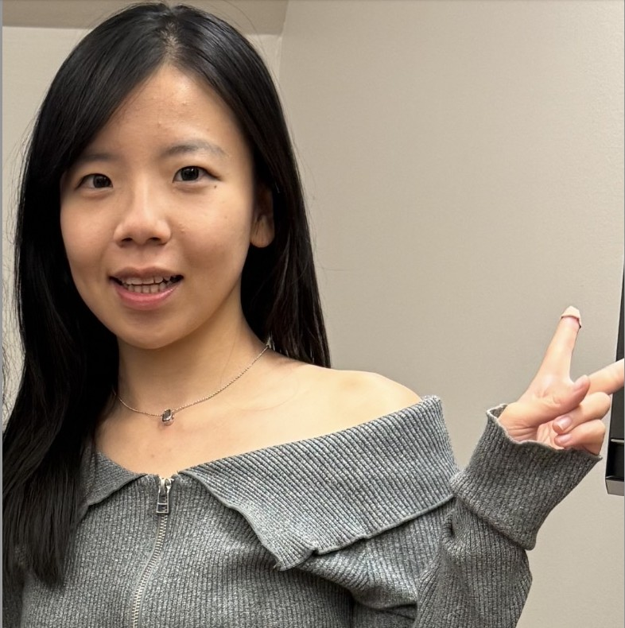

May 2025 — Dec 2025
Amazon Web Services, Inc.
Cloud Support Engineer Intern / Software Dev
I work across AWS, MLOps, and AI/ML systems — from data pipelines to full-stack development. Comfortable in SageMaker, CloudWatch, the AWS SDK, Python, SQL, CI/CD, containers, and observability, I build scalable AI applications, automated analytics pipelines, model-support infrastructure, and monitoring workflows. My foundation in software engineering, debugging, APIs, databases, and performance optimization carries through to production ML, with a growing interest in deep learning and on-device AI deployment.

A few things from the repo list, monitored the way I'd monitor anything in production.
● public repo
● code private
PySpark for data processing, a PyTorch MLP for classification, and MLflow tracking every run — including the distribution shift an external test set caught that internal validation missed.
Turns raw logs, metrics, and traces into a one-paragraph incident summary — so the on-call read is an answer, not a wall of text.
Three serverless Lambda experiments across Bedrock's model types — text generation, text-to-image, and a RAG-based Q&A pipeline.
Helps renters and buyers cut through scattered housing data — search, filter, and compare affordability and livability across the U.S. Cut data retrieval time by 90% and lifted engagement by 30%.
Auto-recommends CloudWatch templates via prompt chaining, paired with a real-time observability stack — logs, dashboards, and anomaly detection built in.
Reverses raw LC4 binary back into readable assembly — decoding opcodes, handling sign extension, from the ground up in C.
A full-stack ordering platform built end-to-end — React front-end, Express REST API, MongoDB data layer. Menu and order state are fully API-driven, with no hardcoded data anywhere in the client.
Master of Applied Science in Computer Science — Concentration in Artificial Intelligence.
Bachelor of Science in Accounting and Information Systems.